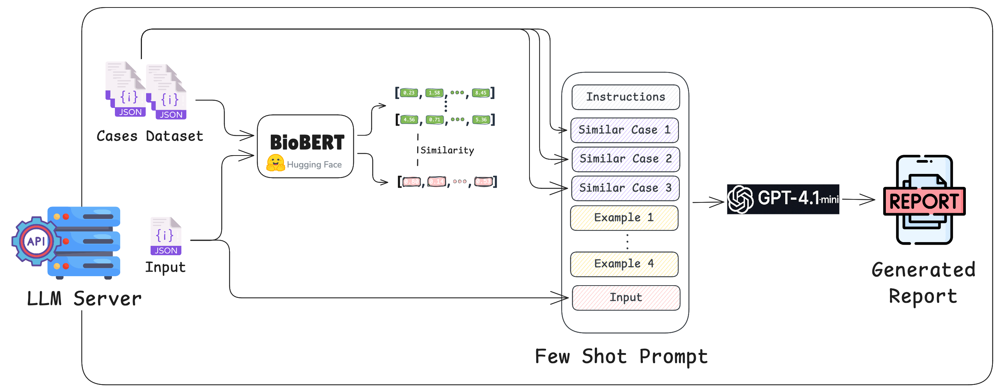

Pablo Ordorica Wiener
GitHub
@pablordoricaw
Computer Engineering MS student at Columbia University (Dec. '25)
Columbia University
EECS E4764 Fall '25
Artificial Intelligence of Things
Group 9 Project Report
Modern hospitals generate large volumes of device logs, but biomedical and clinical engineering teams still spend significant time manually triaging alarms to decide which issues are urgent, which are environmental, and which can wait. This project implements an end‑to‑end prototype of an AI‑powered medical device error triage system that ingests ventilator logs, enriches them with room temperature/humidity measurements and historical FDA MAUDE incident data, and uses a language model to generate structured diagnostic reports. The system runs across three subsystems—a simulated ventilator and logging pipeline, an ESP32‑based sensor node, and an LLM server—and demonstrates how AI of Things can support faster, more consistent error triage in real clinical environments.
Hospitals rely on fleets of complex medical devices such as ventilators, monitors, and imaging systems. When these devices raise errors or alarms, biomedical and clinical engineering teams must quickly determine whether the problem is caused by the environment (e.g., a hot room or high humidity), by user configuration, or by an internal hardware failure. Today this triage process is largely manual: engineers review device logs, check room conditions, search historical incident databases, and then decide what to do. This is time‑consuming, error‑prone, and difficult to scale as the number of connected devices grows.
Our goal is to explore how AI of Things can assist this workflow by automatically correlating device logs with ambient sensor data and with prior similar incidents. By building a complete prototype—from a simulated ventilator and logging pipeline, to an on‑premises sensor node, to a retrieval‑augmented LLM backend—we show that it is feasible to automatically generate human‑readable diagnostic reports that highlight likely root causes and suggested actions. This does not replace human judgement, but aims to reduce the time to first triage, surface important patterns, and provide a more consistent starting point for investigation.
The system is composed of three main subsystems connected over a local network. On
the left, a simulated ventilator application generates realistic log events and
writes them to disk. A logs pipeline process tails these JSONL log files, normalizes
each record, and inserts them into a SQLite database. A FastAPI‑based logs server
exposes a /logs HTTP endpoint that lets other components query
time‑bounded slices of log history, with optional enrichment from the FDA MAUDE
database via the openFDA API.
In the middle, an Adafruit HUZZAH32 ESP32 V2 Feather board with a Si7021 temperature/humidity sensor periodically reads room conditions and polls the logs server for new entries. When it detects an error episode, the microcontroller collects a short window of pre‑error and post‑error logs, aligns each log with the closest sensor reading in time, and posts this enriched sequence to the LLM server over HTTP. On the right, the LLM server combines the incoming logs and sensor data with similar historical cases retrieved from a BioBERT‑indexed dataset, constructs a few‑shot prompt, and queries a GPT model to produce a structured diagnostic report that can be saved and inspected by technicians.

Medical device subsystem. The medical device subsystem is implemented in Python and consists of three modules:
ventilator_01.pylogs_pipeline.pylogs_server.py
The ventilator module simulates a real device by generating timestamped
log events (info, warnings, and error episodes) and writing them as JSONL files.
The logs pipeline watches the logs directory, parses each new line, computes a stable
log_id, and inserts records into a SQLite database while deduplicating on that ID.
The logs server is a FastAPI application that exposes a /logs endpoint, allowing
clients (such as the MCU) to request slices of log history by device ID, time range, and limit,
with optional enrichment from the FDA MAUDE database via the openFDA API.

MCU subsystem. The MCU subsystem runs MicroPython on an Adafruit
HUZZAH32 ESP32 V2 Feather board and acts as the on‑premises “edge” node that ties
the system together. It handles Wi‑Fi connectivity, periodic I²C reads from the
Si7021 temperature and humidity sensor, and optional status updates on a small
SSD1306 OLED display. The firmware maintains a time‑stamped buffer of sensor
readings and, when it detects an error episode in the logs returned by the logs
server, it selects the closest sensor sample for each log entry and attaches
sensor_temp_c and sensor_humidity fields before
forwarding the enriched sequence to the LLM server over HTTP.
The physical prototype uses the HUZZAH32 board connected to the Si7021 sensor via a STEMMA QT / Qwiic JST‑SH 4‑pin cable, and optionally an SSD1306 OLED display wired with jumper cables (VCC to VCC, GND to GND, SCL to pin 20, SDA to pin 21). A breadboard, USB‑C cable, and standard male‑male jumper wires are used to organize power and signal connections. A complete list of components, wiring details, and step‑by‑step setup instructions are provided in the project README: https://github.com/pablordoricaw/eecse4764-aiot-project/blob/main/README.md .
LLM server subsystem. The LLM server subsystem is built with FastAPI and implements a
retrieval‑augmented generation pipeline. When the server starts, it loads BioBERT
(dmis-lab/biobert-base-cased-v1.1) and a curated training dataset of historical error
cases, converts each case into a compact textual summary (error code, device type, average temperature,
average humidity), and computes a single embedding per case. These embeddings and their associated
metadata are stored in memory and reused for all future requests, so the cost of building the RAG index
is paid once at initialization rather than on every error episode.
At runtime, the server accepts individual enriched log messages from the MCU over a
/api/ingest endpoint and buffers them per device until a complete error episode (a
fixed‑length sequence of pre‑error, error, and post‑error logs) has been received. For each completed
episode, it aggregates the logs into a single query description (including error code, device ID,
and the average room temperature and humidity), embeds this query with BioBERT, and computes cosine
similarity against the pre‑computed training embeddings to retrieve the top‑k most similar historical
cases. These retrieved cases are then injected, along with fixed few‑shot examples and the current
episode’s logs, into a prompt that is sent to a GPT model via the Poe API, which returns a structured
diagnostic report.

The final prototype can run end‑to‑end on a single laptop plus one ESP32‑based
sensor node. On the laptop, three Python processes simulate the hospital backend:
the ventilator generator streams logs into rotating JSONL files, the logs pipeline
ingests those files into a SQLite database, and the logs server exposes a
/logs API that the microcontroller and LLM server can query. A separate
FastAPI process runs the LLM server, loading BioBERT and the curated case dataset at
startup, then generating a structured diagnostic report whenever a complete error
episode is received.
On the hardware side, the HUZZAH32 ESP32 V2 board connects to the same Wi‑Fi network as the laptop and periodically reads room temperature and humidity from the Si7021 sensor. When the logs server indicates that a new ventilator error has occurred, the MCU pulls the surrounding log entries, aligns each one with the closest sensor reading, and sends the enriched sequence to the LLM server. The OLED display shows a compact status view (Wi‑Fi state, current temperature/humidity, and last error code) so the prototype can be demoed without a separate serial console.
To streamline demonstrations, a small tmux‑based launcher script opens one window per subsystem (ventilator, logs pipeline, logs server, LLM server, and MCU REPL) and starts all processes with a single command. This allows observers to see logs, database activity, HTTP requests, and LLM outputs in real time while interacting with the physical prototype on the lab bench.
To evaluate the prototype, we defined a small grid of realistic error scenarios that combine different sequences of ventilator log events with different environmental conditions. At the log level, the ventilator simulator can produce five distinct patterns within the error episode window that the MCU monitors:
For each of these log sequences, the room environment can independently be in one of three regimes for both temperature and humidity: low, normal, or high. In principle this yields a rich matrix of test cases (e.g., internal over‑temperature with high room temperature, sensor error with low humidity, and so on) that can be used to stress‑test how well the system distinguishes between internal device faults and environmental causes. Due to time constraints, we were not able to exhaustively cover all combinations, and a more systematic evaluation of this scenario space is left as future work.
One representative test we did complete involved an episode where the ventilator logs reported an internal over‑temperature error (around 70 °C for several tens of seconds), while the room temperature and humidity measured by the ESP32 remained stable and well within normal ranges. In this case, the generated diagnostic report correctly emphasized that the ambient environment was normal and identified the problem as an internal ventilator issue, pointing to likely causes such as cooling system failure, blocked airflow, or hardware malfunction, and recommending that the ventilator be taken out of service for inspection. The full report for this scenario is available in the repository: example_report_rag_fewshot_20251209_122027.txt .
Overall, these initial qualitative tests suggest that the combination of room sensor data, log patterns, and retrieval‑augmented prompting allows the system to generate nuanced explanations that differentiate between environmental and internal faults. A more comprehensive quantitative evaluation—sweeping through all defined log/error sequences and temperature/humidity regimes, and comparing the LLM’s classifications against a ground‑truth rubric—would provide a clearer picture of accuracy and robustness, and remains an important direction for future work.
GitHub
@pablordoricaw
Computer Engineering MS student at Columbia University (Dec. '25)

GitHub
@jasonnliao
Electrical Engineering MS student at Columbia University (Dec. '26)

GitHub
@ohrjh10
Electrical Engineering MS student at Columbia University (Dec. '26)

GitHub
@rahulmurugan
Electrical Engineering MS student at Columbia University (Dec. '25)
Pablo Ordorica Wiener:
pablo.ordorica@columbia.edu
Contact Name 2: email here
Columbia University
Department of Electrical Engineering
Instructor:
Professsor Xiaofan (Fred) Jiang